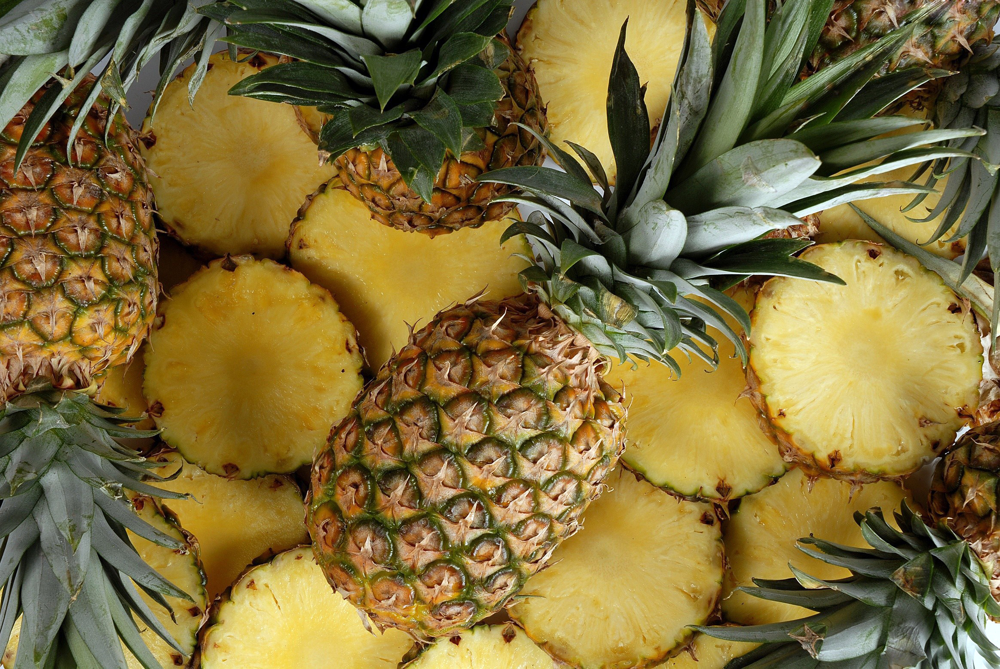

Abacaxi ajuda na digestão, previne doença e mais: 11 benefícios da fruta
Conheça 11 benefícios do abacaxi:
na hora do sexo, aumenta a fertilidade
Fortalece a imunidade
Melhora a digestão
Ajuda a emagrecer
Facilita o ganho de massa muscular
Melhora o fluxo de sangue
Positivo para a saúde mental
Ajuda a evitar doenças cardíacas
Alivia dores musculares
Combate sinais de envelhecimento precoce
Atua como "Protetor Solar"
Ananás
Características
Cascas espinhosas
Forma oval ou cônica
Polpa amarela ou branca
Folhas pontiagudas na cor verde
Textura rugosa na casca
Tamanho variável
Aroma tropical distintivo
Sabor doce e ácido
Estrutura em forma de núcleo
Casca dura e fibrosa
Cultura
Cayenne
Cascas espinhosas
Forma oval ou cônica
Polpa amarela vibrante
Folhas pontiagudas na cor verde
Textura rugosa na casca
Tamanho médio a grande
Aroma tropical pronunciado
Sabor equilibrado entre doce e ácido
Estrutura em forma de núcleo
Casca dura e fibrosa
Comidas com abacaxi
Pizza de Abacaxi
Creme de Abacaxi
Salada de frutas
Sorvete de Abacaxi
Churrasco de Abacaxi
Smoothie de Abacaxi
Frango ao Curry com Abacaxi
Molho de Abacaxi para churrasco
Doce de Abacaxi
Coquetel Pina Colada
Moléstias e pragas
Brasil
Broca-do-fruto
cochonilha
gomose
murcha
podridão-do-olho
nematoides
------
Consumo
in natura
A expressão in natura é uma locução latina que significa "na natureza, da mesma natureza". É utilizada para descrever os alimentos de origem vegetal ou animal que são consumidos em seu estado natural, como por exemplo as plantas.
Industrializado
é um tipo de processo histórico e social através do qual a indústria se torna o setor dominante de uma economia, mediante a substituição de instrumentos, técnicas e processos de produção, resultando em aumento da produtividade dos fatores e a geração de riqueza.

Os principais países produtores de abacaxi, segundo a Organização das Nações Unidas para a Alimentação e Agricultura (2018), são a Costa Rica, as Filipinas, o Brasil, a Tailândia, a Indonésia, a Índia e a Nigéria. Por sua vez, a sua industrialização é feita, principalmente, no Havaí; mas Formosa, Malásia, África do Sul, Austrália e Costa do Marfim também se sobressaem. Os Estados Unidos, a Alemanha, o Japão, o Reino Unido, o Canadá e a França são grandes consumidores do fruto industrializado.